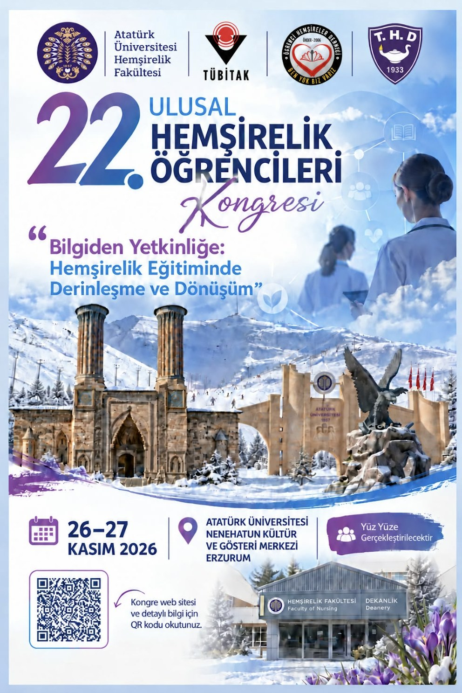

“Bilgiden Yetkinliğe: Hemşirelik Eğitiminde Derinleşme ve Dönüşüm”
22. Ulusal Hemşirelik Öğrencileri Kongresi, 26–27 Kasım 2026 tarihlerinde Atatürk Üniversitesi Hemşirelik Fakültesi ev sahipliğinde Erzurum’da gerçekleştirilecektir. “Bilgiden Yetkinliğe: Hemşirelik Eğitiminde Derinleşme ve Dönüşüm” temasıyla düzenlenen kongre; öğrencileri, akademisyenleri ve meslektaşlarımızı bilimsel paylaşım ve mesleki gelişim amacıyla bir araya getirecektir.

Kongreye gönderilen tüm bildiriler çift kör hakem değerlendirme (double-blind peer review) sürecinden geçirilecektir.
Kabul edilen bildiriler ISBN'li bildiri kitabında yayımlanacaktır.
Değerli Meslektaşlarımız, Kıymetli Hocalarımız ve Sevgili Hemşirelik Öğrencileri,
Atatürk Üniversitesi Hemşirelik Fakültesi olarak, sizleri 26–27 Kasım 2026 tarihlerinde Erzurum’da gerçekleştireceğimiz 22. Ulusal Hemşirelik Öğrencileri Kongresi’ne davet etmenin mutluluğunu ve heyecanını yaşıyoruz.
Hemşirelik eğitimi; bilgiyi kazanmanın ötesinde, bu bilgiyi eleştirel düşünme, etik duyarlılık, klinik karar verme ve nitelikli bakım sunma yetkinliğine dönüştürmeyi gerektirir. Sağlık hizmetlerinin ve teknolojinin hızla değiştiği günümüzde, öğrencilerin öğrenme süreçlerinde daha etkin rol almaları ve mesleki kimliklerini güçlendirmeleri her zamankinden daha değerlidir. Bu anlayışla kongremizin ana temasını “Bilgiden Yetkinliğe: Hemşirelik Eğitiminde Derinleşme ve Dönüşüm” olarak belirledik.
Kongremizde; hemşirelik eğitiminde daha derinlikli ve uygulama odaklı öğrenme, küresel vatandaşlık, kültürlerarası yetkinlik, uluslararası hemşirelik hareketliliği, teknolojinin bakımın insani boyutuna etkisi ve dijital değerler üzerinde duracağız. Bunun yanı sıra alternatif kariyer yolları, liderlik, mesleki özgüven, mentörlük ve klinik yaşama geçiş konularını ele alarak geleceğin hemşirelerinin mesleki yolculuklarına birlikte ışık tutmayı hedefliyoruz.
Öğrencilerin düşüncelerini, deneyimlerini ve çözüm önerilerini paylaşacakları forumlar, kongremizin önemli bir bölümünü oluşturacaktır. Otomasyon ile insan dokunuşu arasındaki ilişkiyi, sosyal medyada görünürlük ile profesyonel kimliğin sorumluluklarını ve geleceğin bakımını şekillendirecek öğrenci inovasyonlarını birlikte tartışacağız. Bilimsel bildiri oturumlarında ise öğrencilerin araştırmalarını paylaşmalarına, bilimsel tartışmalara katılmalarına ve yeni iş birlikleri geliştirmelerine alan açacağız.
Kongremizin; kıymetli hocalarımızın bilgi ve deneyimleri, meslektaşlarımızın klinik birikimleri ve öğrencilerimizin merakı, yaratıcılığı ve yenilikçi fikirleriyle zenginleşeceğine inanıyoruz. Öğrencilerin yalnızca dinleyen değil; sorgulayan, tartışan, üreten ve mesleğin geleceğine yön veren katılımcılar olarak yer aldığı bu buluşmanın, hemşirelik eğitimine yeni bakış açıları kazandırmasını diliyoruz.
Sizleri, bilginin yetkinliğe dönüştüğü bu ortak öğrenme ve paylaşım ortamının bir parçası olmaya davet ediyoruz. Erzurum’un köklü tarihi, kültürel zenginliği ve sıcak misafirperverliği eşliğinde 26–27 Kasım 2026 tarihlerinde buluşmak dileğiyle sevgi ve saygılarımızı sunuyoruz.
Öğrenci Kongre Başkanı
Öğrenci Hemşire Zehra Yenipınar
Kongre Başkanı
Prof. Dr. Reva Balcı Akpınar
Atatürk Üniversitesi Hemşirelik Fakültesi Dekanı
Kongrenin konuları:
Kongre iki gün sürecektir. Birinci gün “Bakım Biliminden Hemşirelik Eğitimine”, ikinci gün “Geleceğin Hemşiresi ve Geleceğin Bakımı” başlığı altında yürütülecektir. Açılış oturumu ve davetli konferanslar 400 kişilik ana konferans salonunda, öğrenci sözlü bildiri sunumları üç ayrı paralel oturum salonunda gerçekleştirilecektir. Poster sunum alanı ana bina fuaye alanında planlanmıştır.
Kongrenin iki günlük taslak bilimsel programı aşağıda özetlenmiştir.
Açılış konferansı “Hemşireliğin Özü: Bakım Bilimi”, bakım bilimini öğretme ve bakımı öğrenmenin yeni yolları üzerine paneller, Öğrenci Forumu, sözlü bildiri ve poster oturumları.
Yapay zekâ çağında hemşirelik eğitimi, iyi bir hemşire olmanın boyutları, inovasyon oturumu, “2035'te Hemşirelik” oturumu, kongre finali ve ödül töreni.
22. Ulusal Hemşirelik Öğrencileri Kongresi, TÜBİTAK BİDEB 2223-B Yurt İçi Bilimsel Etkinlik Düzenleme Desteği Programı kapsamında desteklenmeye layık görülmüştür.
TÜBİTAK 2224-B Katılım Desteği
Sözlü veya poster bildiri sunacak öğrenciler, gerekli bireysel ve etkinliğe ilişkin koşulları sağlamaları hâlinde TÜBİTAK 2224-B Yurt İçi Bilimsel Etkinliklere Katılımı Destekleme Programı’na başvurabilirler. Son başvuru: 27 Ekim 2026, saat 17.30.
Kongre takvimi ve son başvuru tarihleri aşağıda yer almaktadır.
750 TL
1.500 TL
Düzenleme Kurulu ve Bilim Kurulu üyelerinin tam listesi için lütfen Kurullar sayfasını ziyaret ediniz.
Başkan: Bahar Çiftçi
Kongre Başkanı: Reva Balcı Akpınar
33 üyeden oluşan düzenleme kurulu, kongrenin organizasyonel süreçlerini yürütmektedir.
Başkan: Reva Balcı Akpınar
Bilim kurulu, kongre bildirilerinin bilimsel değerlendirme sürecini yönetmektedir.
Arş. Gör. Sümeyye Ekici
Arş. Gör. Yaprak Baga
Arş. Gör. Fatma Ocakoğlu
Öğrenci Hemşire Enes Mesutgil
Öğrenci Hemşire Ebru Yakşı
Öğrenci Hemşire Hayat Aydoğdu
Ulusal Hemşirelik Öğrencileri Kongresi, 2001 yılından bu yana her yıl farklı bir üniversitenin ev sahipliğinde düzenlenmektedir. 23. Ulusal Hemşirelik Öğrencileri Kongresi'ne ev sahipliği yapmak isteyen üniversiteler, aşağıdaki başvuru formunu doldurarak başvuruda bulunabilir.
Atatürk Üniversitesi
Hemşirelik Fakültesi
Erzurum, Türkiye